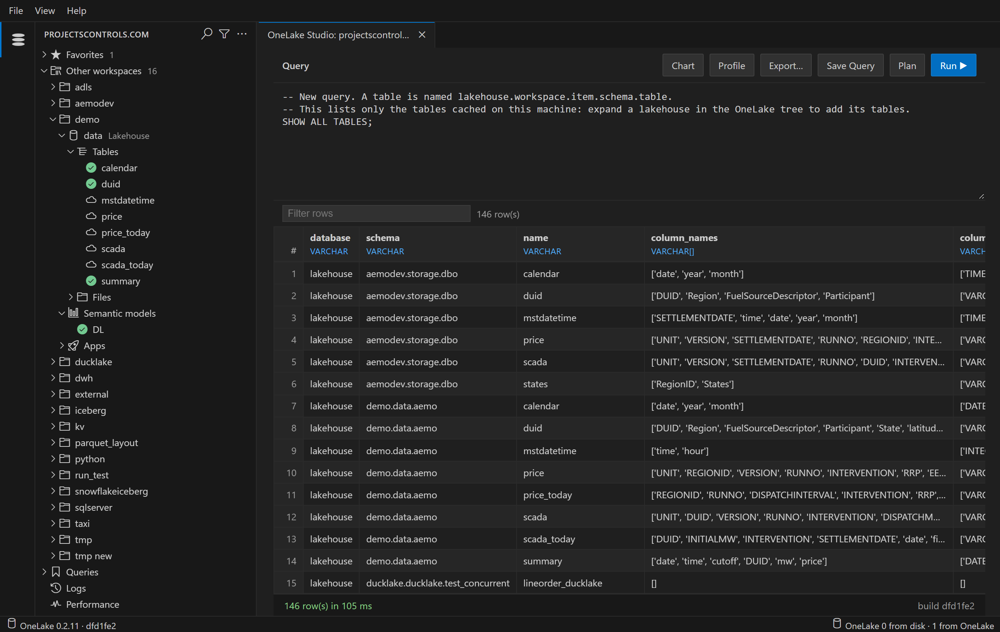

OneLake Studio
Browse and query your Microsoft Fabric data with SQL. A Windows app, and a VS Code extension.
The app
- Download for Windows
- Run it.
- Sign in with your Microsoft account.
Windows warns about the download? The installer isn't signed yet: click More info, then Run anyway. It installs for you alone, with no admin rights, and needs nothing else on the machine.
The VS Code extension
- Install from the Marketplace
- Click the OneLake Studio icon in the activity bar.
- Sign in.
Or run code --install-extension djouallah.onelake-studio. Needs desktop VS Code 1.101 or later on Windows x64, or macOS or Linux on x64 or arm64. The app and the extension share what you've read on one machine.
